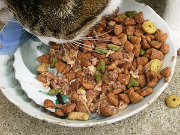
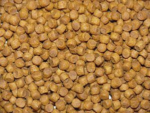

Кошачий корм
Кошачий корм — это корм, предназначенный для потребления домашними кошками. К корму, предназначенному для кошек, существуют определенные требования как относительно его питательной ценности, так и ингредиентам.
Искусственные корма для кошек
Искусственный корм производится для потребления домашними кошками в любом возрасте, начиная с первых дней жизни. Несмотря на то, что кошки — это плотоядные животные, большинство кормов, имеющихся в продаже, содержат и животные, и растительные составляющие с добавлением витаминов, минералов и других полезных элементов. Кошачий корм скомпонован так, чтобы отвечать всем потребностям кошек, в частности, содержит аминокислоту таурин. Кошки не смогут нормально развиваться, употребляя пищу, бедную таурином (например, такую, как собачий корм). Большинство искусственных кошачьих кормов продаются в виде сухих или консервированных кормов. Некоторые производители предлагают замороженный сырой корм и смеси для тех, кто предпочитает кормить своих питомцев натуральными продуктами. Большая часть известных производителей кошачьих кормов используют различные злаковые ингредиенты, такие, как кукуруза и рис, а также побочные продукты мяса — внутренние органы животных, которые представляют собой мясную составляющую корма. Некоторые производители предлагают корма класса «премиум», «натуральные» или «цельные» корма, которые не содержат побочных продуктов и злаков. Сухие корма, не содержащие злаков, всё же содержат углеводы, выработанные, например, из картофеля, так как крахмал, находящийся в нём, необходим для сохранения формы гранул сухого корма. У кошек нет метаболической необходимости в углеводах, так как пищеварительная система у кошачьих вырабатывает глюкозу из белков.
 
Ценность в 100г корма
Белок: 25г
Углеводы: 54г
Жиры: 4,8г
Аминокислоты: 7г
Кальций: 2,5г
Витамины и минералы: 6,7г
Ознакомиться с детальной информацией о кормах вы можете ознакомиться здесь